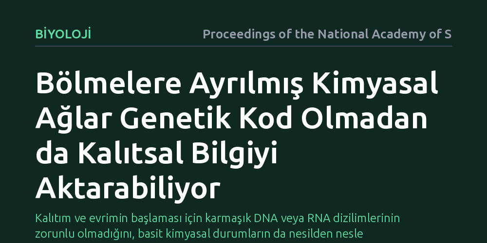

BIYOLOJI · Proceedings of the National Academy of Sciences · 2026-10-07
İlk canlı benzeri yapılarda genetik dizilimler yokken kalıtımın nasıl gerçekleşebildiği incelendi. Araştırmacılar, bölmelere hapsedilmiş otokatalitik kimyasal sistemlerin çift kararlı durumlar sayesinde bilgiyi genetik dizilim olmadan nesillere aktarabildiğini gösterdi.
Kalıtım ve evrimin başlaması için karmaşık DNA veya RNA dizilimlerinin zorunlu olmadığını, basit kimyasal durumların da nesilden nesle aktarılabileceğini gösterir.

Biyolojinin en temel bilmecelerinden biri, yaşamın başlangıcında bilginin nasıl aktarıldığıdır. Günümüzdeki tüm canlılar özelliklerini DNA ve RNA dizilimlerinde şifrelenmiş genler aracılığıyla bir sonraki kuşağa aktarır. Ancak bu kadar karmaşık nükleik asit zincirlerinin ve onları kopyalayan enzimlerin birdenbire ortaya çıkması mümkün değildir. Bu durum, "Genler var olmadan önce kalıtım nasıl başlayabildi?" sorusunu evrimsel biyolojinin merkezine yerleştirir.
Eğer yaşamın kökeninde genetik bir yazılım yoksa, ilk hücre benzeri yapıların çevresel değişikliklere uyum sağlaması ve edindikleri durumları bölünerek yeni oluşan yapılara devretmesi gerekiyordu. Bu soruya verilecek tatmin edici bir yanıt, canlılığın kökenine dair gen merkezli bakış açımızı genişleterek kimyasal sistemlerin kendiliğinden örgütlenme potansiyelini anlamamızı sağlar.
Araştırmacılar bu soruyu yanıtlamak için ilkel dünyada bulunabilecek en basit yapıları temel alan matematiksel modeller kurdular. Bu modellerde, lipit benzeri zarlarla çevrili mikroskobik bölmeler (ilkel hücre öncüleri) ve bu bölmelerin içine hapsolmuş otokatalitik kimyasal tepkime ağları simüle edildi. Otokatalitik sistemler, tepkimeye giren bileşenlerin kendi üretimlerini hızlandırdığı özel kimyasal döngülerdir.
Çalışmada, bölmelerin dış ortamdan besin molekülleri alarak büyümesi ve belirli bir kritik boyuta ulaştığında rastgele ikiye bölünmesi dinamik sistem analizleriyle incelendi. Bilgisayar simülasyonları, kimyasal bileşenlerin konsantrasyon değişimlerini ve bölmelerin bölünme anında bu molekülleri yeni bölmelere nasıl paylaştırdığını hassas bir biçimde takip etti.
Simülasyonlar, kapalı bölmeler içindeki otokatalitik ağların çift kararlılık (bistabilite) adı verilen bir davranış sergilediğini ortaya koydu. Tıpkı bir elektrik anahtarının açık veya kapalı konumda kalabilmesi gibi, bu kimyasal sistemler de aynı ortam koşullarında iki farklı kararlı derişim durumundan birinde varlığını sürdürebilmektedir. Sistem bir kez aktif duruma geçtiğinde, dışarıdan güçlü bir müdahale olmadıkça bu kimyasal durumunu korumaktadır.
Daha da önemlisi, bölmeler büyüyüp ikiye bölündüğünde içlerindeki kimyasal durum kaybolmamaktadır. Her iki yavru bölme de ana bölmedeki kimyasal derişim seviyesini devralmakta ve aynı kararlı durumda çalışmaya devam etmektedir. Bu mekanizma, hiçbir nükleik asit dizilimi veya genetik kod olmaksızın, saf kimyasal dinamiklerle çalışan ilkel bir kalıtım türü sunmaktadır.
Bu bulgular, erken yaşamın evrimleşebilmek için karmaşık genetik moleküllerin ortaya çıkmasını beklemek zorunda kalmadığını göstermektedir. Kimyasal ağların farklı kararlı durumları, ilkel hücreler arasında çeşitlilik yaratabilir ve bu çeşitlilik doğal seçilim mekanizmalarının işlemesi için yeterli bir zemin sunabilir.
Sonuç olarak çalışma, genetik sistemlerin yaşamın başlangıcı değil, daha önce var olan dinamik kimyasal kalıtım mekanizmalarının üzerine inşa edilmiş gelişmiş bir optimizasyon adımı olabileceğini düşündürmektedir. Bu yaklaşım, laboratuvarda yapay hücre tasarımları geliştiren araştırmacılara da bilgi aktarımı için yeni yollar sunmaktadır.